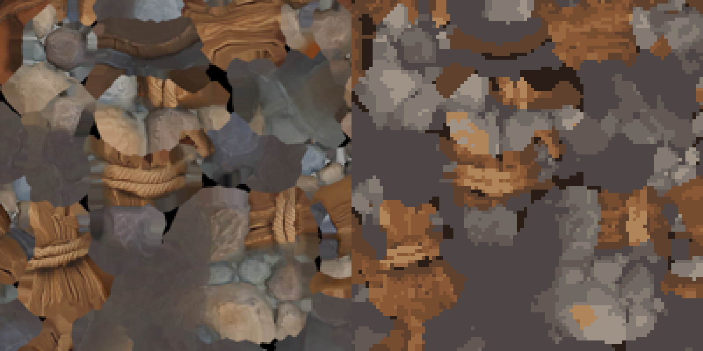
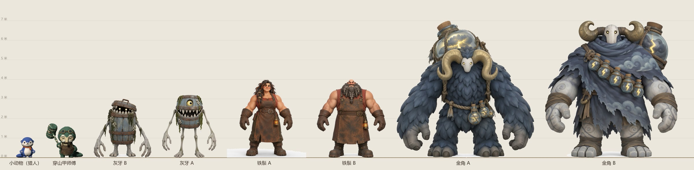

One person directing, and a lot of machines.
一个人拿主意，很多机器干活。
The first map of Scrap Forge was started on 6 November 2026. I direct the game; I do not write its code. What follows is the AI disclosure at full length: who does what, where a model runs inside the game, and what I did about everything looking generated.
《锻造之王》的第一张地图是 2026 年 11 月 6 日开工的。我负责拿主意，代码不是我写的。下面是 AI 说明的完整版：谁在做什么，游戏里哪个地方跑着一个模型，以及“看起来全是生成的”这件事我是怎么处理的。
Who does what
谁在做什么
The code is written by coding agents, Claude Code and Codex, working in the same Unity project: 344 C# files so far. I play each build and say what is wrong with it, usually in a sentence or two, and choose when they bring me options. The agents also wrote the Blender scripts that clean and rig the models, the bots that play the game so its numbers can be tuned, and the checks every build has to pass.
代码由编程代理来写，Claude Code 和 Codex 在同一个 Unity 工程里干活，到现在是 344 个 C# 文件。我玩每一个版本，说哪里不对，通常就一两句话；它们拿出几个方案的时候，由我来挑。清理模型和绑骨用的 Blender 脚本、替我试玩好调数值的机器人、每次构建都必须通过的检查，也都是它们写的。
The models come from Tripo. Each one starts as a concept picture, always in three views (a rule I made after a batch built from single views came out badly), becomes a mesh, and then goes through scripts that weld its seams, cut it to a face budget and repaint its texture. Characters are rigged and their moves keyed by script as well.
模型来自 Tripo。每个模型先有概念图，而且一定是三视图（有一批只用单张图生成的模型效果很差，之后我定了这条规矩），再变成网格，然后交给脚本焊缝、按面数预算减面、重画贴图。角色的绑骨和动作也是脚本做的。
The forging sounds are the one place I threw the generated version out entirely. The first ones sounded silly and had no weight, so the hammer, the hiss and the ring are now computed while you play.
打铁的声音是我唯一把生成版本整个扔掉的地方。最早那批听起来很蠢，没有力量感，所以现在锤声、嘶声和余响都是你玩的时候现算出来的。

A small model at the anvil
铁砧边上的小模型
When a sword takes a third, fourth or fifth thing, it stops being one of the 231 weapons that were designed in advance. It needs a name and a look. A language model of half a billion parameters, Qwen2.5-0.5B, gives it both, on the player's own processor.
一把剑熔进第三、第四、第五件东西之后，就不再是事先设计好的那 231 种武器之一了。它需要一个名字，也需要一个样子。这两样由一个只有五亿参数的语言模型 Qwen2.5-0.5B 来给，跑在玩家自己的处理器上。
Each fusion is one question: the weapon's present name, the thing just added, and short lists to choose from. The answer names the weapon in both languages, picks two keywords and says where the new thing sits. The keywords are things the game can draw: longer, bent, rusted, frosted, hung with shells, shedding sparks. Each also carries fixed numbers, so a serrated edge always means 15% more damage. The model chooses and names. It never sets a number, and it cannot ask for anything the game cannot show.
每次熔合就是问它一个问题：武器现在叫什么，刚加进去的是什么，再给几张短短的候选表。它的回答要给出中英两个名字，挑两个关键词，再说新东西装在武器的哪个位置。关键词都是游戏画得出来的：加长、弯曲、生锈、结霜、挂贝壳、冒火花。每个词还带着固定的数值，比如“锯齿”永远是伤害加 15%。模型负责挑和起名，它从不决定数值，也没法要一样游戏画不出来的东西。
A model this small is not dependable, and I would rather say so. Over replays of 756 questions, between 58 and 70 names in a hundred pass the checks; the rest are replaced by a name built by rule. It tends to take the first option it is offered, so the lists are turned for every roll. Its English is sometimes odd. All of these came out of the game:
这么小的模型并不可靠，这一点我宁愿直说。拿 756 个问题反复重放，每一百个名字里有 58 到 70 个能通过检查，其余的换成按规则拼出来的名字。它总爱选列表里的第一项，所以每次都要把列表转一转。它的英文有时很怪。下面这些都是游戏里真实出现过的：
- scrap + bottle, then a lantern废铁 + 漂流瓶，再加灯笼灯笼钉船 · Hammered Bottle Ship
- the same recipe, on camera for the loop below同一个配方，为下面那段循环录的这一次灯笼船钉 · Bottle Nail Ship
- barrel + lantern, then a coconut, then rope木桶 + 灯笼，再加椰子、缆绳缠绳椰子火药桶 · Corded Coconut Firecracker
- the same recipe, rolled again同一个配方，再来一次波浪椰香火药桶 · Wave Coco Powder
- and again再来一次缠椰子火药桶 · Cocoa Powder Bottle
- scrap + rope, then a lantern废铁 + 缆绳，再加灯笼发光捆废铁 · Flame Wrapped Scrap
- rope + lantern, then a bottle缆绳 + 灯笼，再加漂流瓶贝壳灯绳 · Sea Shell Lamp
- coconut + rope, then scrap twice (keyword: rusted)椰子 + 缆绳，再加两次废铁（关键词：生锈）生锈椰棕绳 · Sparkle Coconut Rope
- Cloudtop: old pick + yak wool, then a gourd云顶：旧矿镐 + 牦牛毛团，再加雪水葫芦雪绒花葫芦绳镐 · Snowflake Glued Climbing
- Cloudtop: two lumps of sulphur, then an old pick云顶：两块硫磺，再加旧矿镐碎石硫磺 · Squelched Sulphur Lumps
On the development PC the model starts in one to four seconds and answers in about half a second. I have no numbers for slower machines yet. In a room only the host asks it, and the finished sword travels to everyone else.
在开发用的电脑上，模型一到四秒启动，大约半秒给出回答。更慢的机器上是什么样，我还没有数据。联机时只有房主去问它，打好的剑再发给其他人。
Slightly pixel
带一点像素
Generated models arrive with painted textures that look generated: busy, soft, and each a little different from the next. The first island I put together from them looked crude and cluttered at once. What people call the AI look is, I think, less about tool marks than about not being able to see that anyone made a decision. So the decision had to be visible, and it had to be the same one everywhere.
生成的模型带着一看就是生成的贴图：又碎又糊，而且每一个都和旁边的不太一样。我用它们拼出来的第一座岛，又简陋又杂乱。大家说的“AI 味”，我觉得关键不在工具留下的痕迹，而在于看不出有人做过决定。所以这个决定得让人看得见，而且到处都得是同一个决定。
The rule came from the hearth, which I liked as soon as I saw it. Scenery textures are baked down, smoothed, cut to about twenty flat colours and sampled without filtering, so every rock, crate and palm shows the same small square of paint. Weapons keep their painting, because they are what you look at. The rival smiths are redrawn on one pixel grid per body. Summons are built from cubes about three centimetres across, more pixel than anything else because they are moves and not things. Attack effects are pixel sprites drawn by code, the interface is wood and paper drawn as eight-by-eight textures, and the animals wear twenty layers of fur over a coat sampled the same blunt way. The picture itself is not pixelated. Only the materials are.
这条规矩是从灶台来的，我第一眼看到它就喜欢。场景的贴图先烘焙、再抹平、压到大约二十种平涂的颜色，采样时不做过滤，于是每块石头、每个箱子、每棵棕榈树上，都是同样大小的一小块颜色。武器保留原来的画法，因为它是你一直盯着看的东西。各位铁匠的贴图按身体大小各自重画在一张像素格上。召唤物用大约三厘米见方的小方块搭成，比别的都更像素，因为它们是招式，不是物件。攻击特效是代码画的像素图，界面是用 8×8 的小贴图画出来的木头和纸，动物身上的毛是二十层壳，底下的皮毛用的是同样不过滤的采样。画面本身并没有像素化，像素化的只有材质。


Checks, proofs and bots
检查、取证和机器人
Nobody on this project is a tester, so the game tests itself. Before a build is made, its rules are played in a simulation with no picture and the results compared with numbers: twenty groups of checks, 875 of them for the contract rules alone at the last count. Fifty-six command-line flags make the finished game play one part of itself and write screenshots. Bots of several skill levels fight every smith and play whole runs, so that the numbers are roughly right before I sit down.
这个项目里没有测试员，所以游戏自己测自己。每次构建之前，规则先在一个没有画面的模拟里跑一遍，结果和数字逐条对照：一共二十组检查，光是合同规则这一组，最近一次就有 875 条。另有五十六个命令行开关，能让打好的游戏自己把某一段玩一遍并截图。几种水平的机器人会去挑战每一位铁匠、跑完整局，这样在我坐下来玩之前，数值已经大致靠谱。
The trailer was made the same way. A recorder and a small director were added to a private copy of the game: the director plays the seats and moves the camera, the recorder films at sixty frames a second, and a script cuts the takes to the beat of the music.
预告片也是这样做的：在游戏的一份私有副本里加了一个录像器和一个小导演，导演操控各个座位、移动镜头，录像器按每秒 60 帧录下来，再由脚本按音乐的节拍剪。
What is not there yet
还没做到的
- There is no Steam app yet. Lobbies, 42 achievements and cloud saves are written, and have only been tried on Valve's test app.还没有 Steam 应用。大厅、42 个成就和云存档都写好了，但只在 Valve 的测试应用上试过。
- Playing over Steam has not been tried between two real accounts.通过 Steam 联机，还没有在两个真实账号之间试过。
- Bots are not people. Co-op, Versus, the King and the newest weapons have had little or no play by humans.机器人不是人。合作、对战、王，还有最新的那批武器，几乎没有真人玩过。
- Nothing has been measured on a slow computer, and nothing has run on a Mac.慢的电脑上没有任何实测数据，Mac 上一次都没跑过。
- I have not yet sat down and approved the sound by ear.声音我还没有坐下来一条一条听过、点过头。
- Cloudtop still borrows the beach's ambience and footsteps.云顶的环境声和脚步声还是借海滩的。